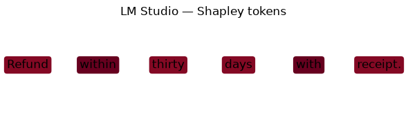
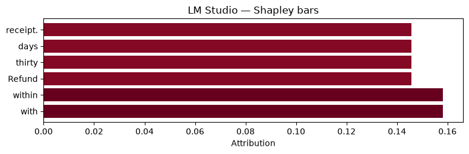
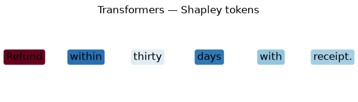
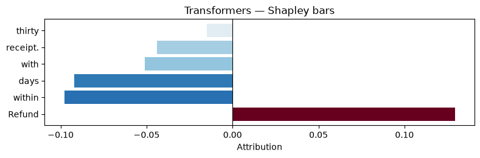

End-to-end text explainability¶
Business context: Product and policy teams need to see which prompt tokens drive a model answer before shipping FAQ bots or refund assistants. This notebook runs the full nlp-shap pipeline on a realistic user question, compares two generative backends on the same weights, and renders attributions for review.
Goal: Explain an identical snapshot with LM Studio (local OpenAI-compatible API) and Hugging Face transformers, then visualize per-token Shapley values.
Prerequisites: pip install "nlp-shap[lmstudio,transformers,viz]", Python 3.12, LM Studio serving qwen2-500m-instruct (optional but recommended). Set NLP_SHAP_E2E_MODEL to override the default tiny HF model used for fast automated runs.
import os
from pathlib import Path
import matplotlib.pyplot as plt
from nlp_shap import (
ExplainConfig,
ExplainRunner,
render_attribution,
)
from nlp_shap.domain.conversation import ConversationSnapshot, Message, Turn
from nlp_shap.domain.enums import Role
from nlp_shap.masking.partitions import TokenPartitioner
from nlp_shap.pipeline.result import ExplainRunOutput
LM Studio backend¶
from nlp_shap.errors import BackendUnavailableError
lmstudio_output = None
try:
import lmstudio as lms
except ImportError:
print("LM Studio extra not installed — pip install 'nlp-shap[lmstudio]'.")
else:
host = await lms.AsyncClient.find_default_local_api_host()
if host is None or not await lms.AsyncClient.is_valid_api_host(host):
print("LM Studio unavailable — load qwen2-500m-instruct and rerun this section.")
else:
try:
lmstudio_output = await run_explain("lmstudio", api_host=host)
except BackendUnavailableError as exc:
print(f"LM Studio explain skipped: {exc}")
else:
lmstudio_output.result.values
Transformers backend¶
transformers_output = None
try:
transformers_output = await run_explain("transformers")
except Exception as exc:
print(f"Transformers backend failed: {exc}")
else:
transformers_output.result.values
Visual comparison¶
def visualize_run(label: str, output: ExplainRunOutput | None) -> None:
if output is None:
print(f"Skipping visualization for {label} — no output.")
return
print(label, output.metrics)
render_attribution(
output,
snapshot,
player_set,
renderer="token_text",
title=f"{label} — Shapley tokens",
)
plt.show()
render_attribution(
output,
snapshot,
player_set,
renderer="token_bar",
title=f"{label} — Shapley bars",
)
plt.show()
visualize_run("LM Studio", lmstudio_output)
visualize_run("Transformers", transformers_output)
LM Studio SchedulerMetrics(requested=63, executed=63, deduplicated=0, cache_hits=0, kv_cache_hits=0)
Transformers SchedulerMetrics(requested=63, executed=63, deduplicated=0, cache_hits=0, kv_cache_hits=61)




Optional YAML presets¶
repo_root = Path.cwd()
for name in ("dev_lmstudio.yaml", "dev_transformers.yaml"):
path = repo_root / "config" / name
print(name, "exists" if path.exists() else "missing")
dev_lmstudio.yaml missing
dev_transformers.yaml missing